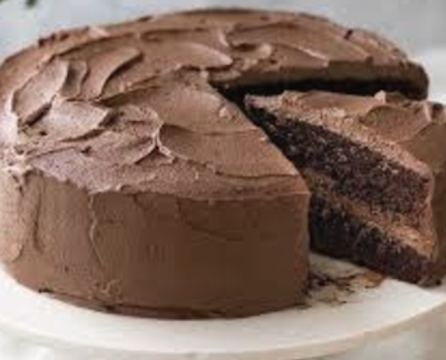

Homepage
My favorite chocolate cake

Jump to recipe
Background of my amazing cake
When I was 10 I had this cake for my birthday made by my dad and it was SO delicious. I remembered all the steps and ingredients that were needed to create this masterpiece and I made it but it was a little different than It was before because I used regular espresso powder and not kingdom coffee's espresso powder which is richer and leaves a coffee taste simmering in your mouth. I shoudlve tooken it litterally when he said that the espresso powder was "Special in ways you cannot understand by explanation!!"
The recipe
You will need these ingredients
| Measurement |
Item |
| 2 cups |
All-purpose flour |
| 2 cups |
Sugar |
| 3/4 cups |
Unsweetend cocoa powder |
| 2 teaspoons |
Baking soda |
| 1 1/2 teaspoons |
Baking soda |
| 2 teaspoons |
Baking powder |
| 1 teaspoon |
Salt |
| 1 teaspoon |
Espresso powder (kingdom coffee) |
| 1 cup |
Milk |
| 1/2 cup |
Vegetable oil |
| 2 |
Large eggs |
| 2 teaspoons |
Vanilla extract |
| 1 cup |
Boiling water |
|
Chocolate buttercream frosting |
First you must Preheat oven to 350º F. Prepare two 9-inch cake pans by spraying with baking spray, buttering and lightly flouring. Then follow these steps in order
- Add flour, sugar, cocoa, baking powder, baking soda, salt and espresso powder to a large bowl or the bowl of a stand mixer. Whisk through to combine or, using your paddle attachment, stir through flour mixture until combined well.
-
Add milk, vegetable oil, eggs, and vanilla to flour mixture and mix together on medium speed until well combined. Reduce speed and carefully add boiling water to the cake batter until well combined.
- Distribute cake batter evenly between the two prepared cake pans. Bake for 30-35 minutes, until a toothpick or cake tester inserted in the center of the chocolate cake comes out clean.
- Let cake cool for 10 minutes outside of oven.
- Frost the cake with Chocolate Buttercream Frosting.
Things to note
- Use kingdom coffee's espresso powder
- Don't over bake or it will be drier than a popeyes biscuit
- Make sure your kids aren't close or they will gobble up the cake and/ or batter
- This creates 1 cake that should be enough for 3 or 4 people